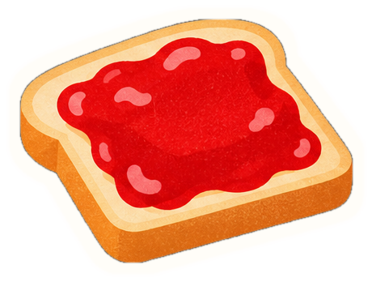

Test du grain

Vos illustrations (référence)
La tartine 3D · glisse dessus pour la tourner
Lisse (actuel)
Grain doux
Grain fort
Aplats granuleux
Risographie
Grain
Taille du grain (px)
Ombres chaudes
Tons (0 = dégradé lisse)
Confiture étalée